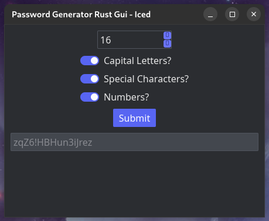

Password_Generator_Rust_GUI

Github Repository

This was my first real project using Rust and the Iced crate. It really helped with grasping the basics of rust, as well as get a feel for UI design using Iced. Rust is no longer just a systems language. Its vast ecosystem and support now enables it to be used for creating native desktop applications with excellent performance!